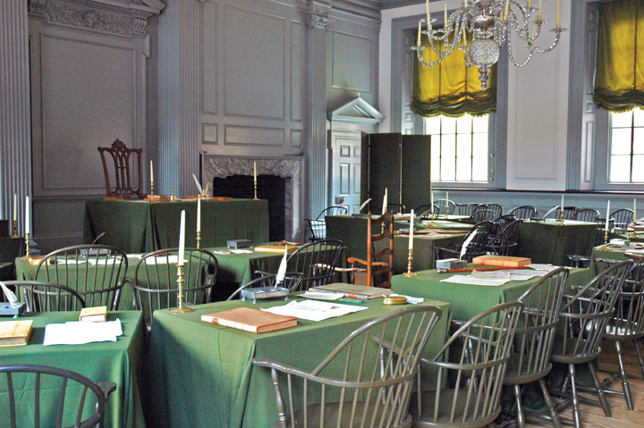
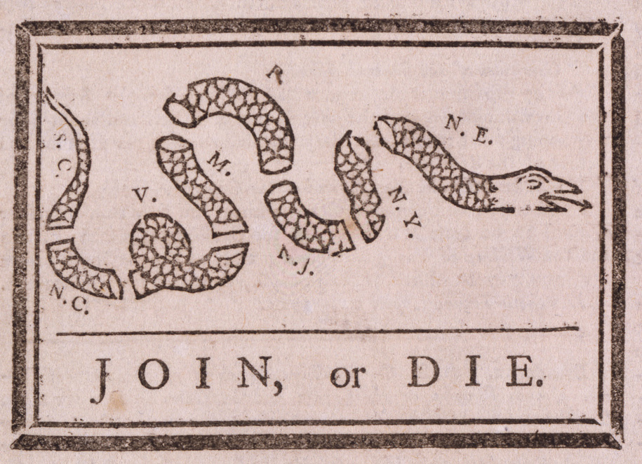
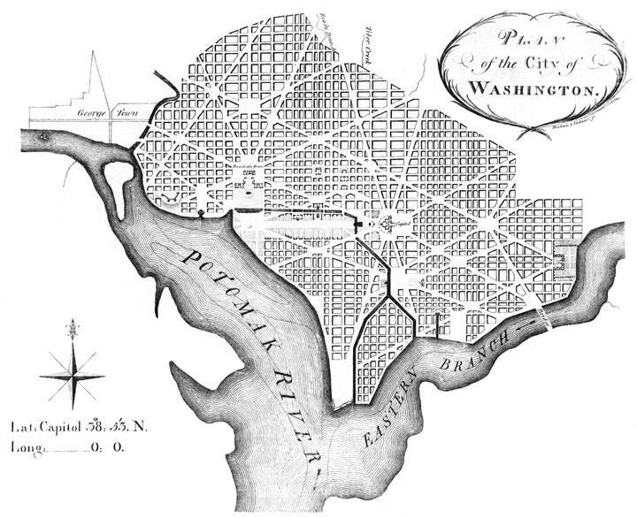
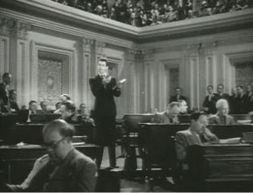

On the day after the presidential election of 2000, the news on ABC World News Tonight was anything but routine: candidates George W. Bush and Al Gore disputed the election results. Victory addresses and concession speeches were postponed, as the arduous process of challenging the vote in the pivotal state of Florida commenced.
As anchor Peter Jennings noted at the outset of the evening broadcast, “Uncertainty, intrigue and partisan politics make for a volatile mix.” But he ended the broadcast with a reassuring note, much as anchors had done following previous elections: “Finally, this evening, a very brief personal note. A colleague and I who have covered the transfer of power in many unfortunate parts of the world, very often at the point of a gun, agree today on the marvel of this democracy. For all the turmoil last night and today and perhaps tomorrow, Americans, unlike so many others, take the peaceful and orderly transition of power, ultimately, for granted. A gift from the founding fathers.”“World News Tonight” transcript, November 8, 2000, quotations on pp. 1 and 9.
Jennings reiterated the conventional wisdom and reinforced public opinion about the wondrous design of American government contained in the Constitution. Yet his praise of the founders was misleading: in fact, the Constitution helped produce the “turmoil” of the 2000 presidential election. Presidents are selected by an Electoral College, a process whereby the winner of the popular vote in a state usually takes all of its electoral votes. Bush was able to win a scant majority in the Electoral College, even as more people voted for Gore nationwide.
The media have long been enthusiastic about the Constitution. They provided crucial assistance in the processes leading up to its adoption in the 1780s. They continue to venerate it today.
After reading this section, you should be able to answer the following questions:
We can understand what the Constitution was designed to accomplish by looking at the political system it replaced: the Articles of Confederation, the United States’ first written constitution, which embodied political ideals expressed by the Declaration of Independence.
By the mid-eighteenth century, Britain’s thirteen colonies on North America’s east coast stretched from Georgia to New Hampshire. Each colony had a governor appointed by the king and a legislature elected by landholding voters. These colonial assemblies, standing for the colonialists’ right of self-government, clashed with the royal governors over issues of power and policies. Each colony, and the newspapers published therein, dealt with the colonial power in London and largely ignored other colonies.
British policy eventually pushed politics and news across colonial boundaries. In 1763, the British antagonized the colonialists in two important ways. A royal proclamation closed off the frontier to colonial expansion. Second, the British sought to recoup expenses borne defending the colonies. They instituted the first ever direct internal taxes in North America. The most famous, the Stamp Act, required the use of paper embossed with the royal seal to prove that taxes had been paid.
Such taxes on commerce alienated powerful interests, including well-off traders in the North and prosperous planters in the South, who complained that the tax was enacted in England without the colonists’ input. Their slogan, “No taxation without representation,” shows a dual concern with political ideals and material self-interest that persisted through the adoption of the Constitution.
Among the opponents of the Stamp Act were printers who produced newspapers and pamphlets.
The arduous technology of typesetting and hand-printing individual pages did not permit sizable production.See Stephen Botein, “‘Meer Mechanics’ and an Open Press: The Business and Political Strategies of Colonial American Printers,” Perspectives in American History 9 (1975): 127–225; and “Printers and the American Revolution,” in The Press and the American Revolution, ed. Bernard Bailyn and John B. Hench (Worcester, MA: American Antiquarian Society, 1980), 11–57. Also, Charles E. Clark, The Public Prints: The Newspaper in Anglo-American Culture (New York: Oxford University Press, 1994), chap. 9; and “The Press the Founders Knew,” in Freeing the Presses: The First Amendment in Action, ed. Timothy E. Cook (Baton Rouge: Louisiana State University Press, 2005). Newspapers reached large audiences by being passed around—“circulated”—or by being read aloud at taverns.Thomas C. Leonard, News for All: America’s Coming-of-Age with the Press (New York: Oxford University Press, 1995), chap. 1. Printers’ precarious financial condition made them dependent on commissions from wealthy people and official subsidies from government, and thus they were eager to please people in power. Crusading journalism against government authorities was rare.For amplification of this argument, Timothy E. Cook, Governing with the News: The News Media as a Political Institution (Chicago: University of Chicago Press, 1998), chap. 2. The Stamp Act, however, was opposed by powerful interests and placed financial burdens on printers, so it was easy for newspaper printers to oppose it vigorously with hostile stories.
During the Stamp Act crisis, news began to focus on events throughout the thirteen colonies. Benjamin Franklin, postmaster of the British government for the colonies, developed a system of post roads linking the colonies. Printers now could send newspapers to each other free of charge in the mail, providing content for each other to copy. Colonial legislatures proposed a meeting of delegates from across the colonies to address their grievances. This gathering, the Stamp Act Congress, met for two weeks in 1765. Delegates sent a petition to the king that convinced British authorities to annul the taxes.
Declaration of Rights
See the text of the Stamp Act Congress’s Declaration of Rights at http://www.constitution.org/bcp/dor_sac.htm.
In 1773, the British government awarded the East India Company a monopoly on importing and selling tea to the American colonies. This policy, too, hurt powerful interests: colonial traders and merchants. Rebellious Bostonians ransacked the East India Company’s ships and pushed cartons of tea overboard. The British reacted harshly to this “Boston Tea Party”: they closed the port of Boston, deported rebels to England for trial, and restricted settlement in and trade to the west of the country.
Once again, delegates from the various colonies met, this time in a gathering known as the Continental Congress, to address the difficulties with Britain. But this congress’s petitions, unlike those of the Stamp Act Congress, were rebuffed. Repressive policies were kept in place. The Continental Congress launched a boycott of British products, initiated the Revolutionary War, and passed the Declaration of Independence.See Jack N. Rakove, The Beginnings of National Politics: An Interpretive History of the Continental Congress (New York: Knopf, 1979).
The Declaration of IndependenceThe document drafted by Thomas Jefferson and adopted by the Continental Congress in revised form in 1776, which declared the independence of the thirteen colonies from Britain., issued on July 4, 1776, announced that the thirteen colonies were independent of Britain. It was designed to be read aloud in public and to be sent to international audiences. Its point-by-point charges against British rule give equal weight to how the king damaged America’s economic interests and how he ignored principles of self-government.
The Declaration is a deeply democratic document.Staughton Lynd, The Intellectual Origins of American Radicalism (New York: Vintage, 1969); Garry Wills, Inventing America: Jefferson’s Declaration of Independence (New York: Vintage, 1979); and Pauline Maier, American Scripture: Making the Declaration of Independence (New York: Knopf, 1997). It is democratic in what it did—asserting the right of the people in American colonies to separate from Britain. And it is democratic in what it said: “We hold these truths to be self-evident, that all men are created equal” and have inviolable rights to “life, liberty, and the pursuit of happiness.” The Declaration concludes that the people are free to “alter or abolish” repressive forms of government. Indeed, it assumes that the people are the best judges of the quality of government and can act wisely on their own behalf.
The Declaration of Independence
For more information on the Declaration of Independence, visit the National Archives online at http://www.archives.gov/exhibits/charters/declaration.html.
Drafted in 1777, the Articles of ConfederationThe first American written constitution, adopted by the Continental Congress in 1777, ratified in 1781, and superseded when the Constitution was ratified by nine of the thirteen states in 1788. were the first political constitution for the government of the United States. They codified the Continental Congress’s practices and powers. The United States of America was a confederationA political system in which a government acts as a unit superior to the states but is dependent on their consent. of states. Although the confederation was superior to the individual states, it had no powers without their consent.
The Articles of Confederation
For the text of the Articles of Confederation, see http://www.earlyamerica.com/earlyamerica/milestones/articles/text.html.
Under the Articles, the Continental Congress took over the king’s powers to make war and peace, send and receive ambassadors, enter into treaties and alliances, coin money, regulate Indian affairs, and run a post office. But the confederation could not raise taxes and relied on revenues from each of the states. There was no president to enforce the laws and no judiciary to hear disputes between and among the states.
Each state delegation cast a single vote in the Continental Congress. Nine states were needed to enact legislation, so few laws were passed. States usually refused to fund policies that hampered their own interests.Keith L. Dougherty, Collective Action under the Articles of Confederation (New York: Cambridge University Press, 2001), chaps. 4–5. Changes in the Articles required an all-but-impossible unanimous vote of all thirteen delegations. The weakness of the Articles was no accident. The fights with Britain created widespread distrust of central authority. By restricting the national government, Americans could rule themselves in towns and states. Like many political thinkers dating back to ancient Greece, they assumed that self-government worked best in small, face-to-face communities.
The first American political system, as expressed in the Articles of Confederation, reflected a distrust of a national government. Its powers were deliberately limited in order to allow Americans to govern themselves in their cities and states.
After reading this section, you should be able to answer the following questions:
The Constitution was a reaction against the limitations of the Articles of Confederation and the democratic experiments begun by the Revolution and the Declaration of Independence.
The Articles could not address serious foreign threats. In the late 1780s, Britain denied American ships access to British ports in a trade war. Spain threatened to close the Mississippi River to American vessels. Pirates in the Mediterranean captured American ships and sailors and demanded ransom. The national government had few tools to carry out its assigned task of foreign policy.A synopsis is Jack N. Rakove, Original Meanings: Politics and Ideas in the Making of the Constitution (New York: Knopf, 1996), 25–28. More generally, see Max M. Edling, A Revolution in Favor of Government: Origins of the U.S. Constitution and the Making of the American State (New York: Oxford University Press, 2004).
There was domestic ferment as well. Millions of dollars in paper money issued by state governments to fund the Revolutionary War lost their value after the war.Gordon S. Wood, “Interests and Disinterestedness in the Making of a Constitution,” in Beyond Confederation: Origins of the Constitution and American National Identity, ed. Richard Beeman, Stephen Botein, and Edward C. Carter II (Chapel Hill: University of North Carolina Press, 1987), 69–109. Financial interests were unable to collect on debts they were owed. They appealed to state governments, where they faced resistance and even brief armed rebellions.
Newspapers played up Shays’s Rebellion, an armed insurrection by debt-ridden farmers to prevent county courts from foreclosing mortgages on their farms.See Leonard A. Richards, Shays’s Rebellion: The American Revolution’s Final Battle (Philadelphia: University of Pennsylvania Press, 2002). Led by Captain Daniel Shays, it began in 1786, culminated with a march on the federal arsenal in Springfield, Massachusetts, and wound down in 1787.
The Continental Congress voted unanimously to raise an army to put down Shays’s Rebellion but could not coax the states to provide the necessary funds. The army was never assembled.See Keith L. Dougherty, Collective Action under the Articles of Confederation (New York: Cambridge University Press, 2001), chap. 6.
Shays’s Rebellion
To learn more about Shays’s Rebellion, visit the National Park Service online at http://www.nps.gov/spar/historyculture/shays-rebellion.htm.
Leaders who supported national government portrayed Shays’s Rebellion as a vivid symbol of state governments running wild and proof of the inability of the Articles of Confederation to protect financial interests. Ordinary Americans, who were experiencing a relatively prosperous time, were less concerned and did not see a need to eliminate the Articles.
The Constitutional ConventionThe gathering of delegates from twelve of the thirteen states who met in Philadelphia from June to September of 1787; originally authorized by the Continental Congress to consider amendments to the Articles of Confederation, they ultimately drafted the Constitution that replaced it. was convened in 1787 to propose limited reforms to the Articles of Confederation. Instead, however, the Articles would be replaced by a new, far more powerful national government.
Twelve state legislatures sent delegates to Philadelphia (Rhode Island did not attend). Each delegation would cast a single vote.
The delegates were not representative of the American people. They were well-educated property owners, many of them wealthy, who came mainly from prosperous seaboard cities, including Boston and New York. Most had served in the Continental Congress and were sensitive to the problems faced by the United States. Few delegates had political careers in the states, and so they were free to break with existing presumptions about how government should be organized in America.
Constitutional Convention
To learn more about the delegates to the Constitutional Convention, visit http://www.archives.gov/exhibits/charters/constitution_founding_fathers.html.
The Constitutional Convention was a mix of great and minor characters. Exalted figures and brilliant intellects sat among nonentities, drunkards, and nincompoops. The convention’s driving force and chief strategist was a young, bookish politician from Virginia named James Madison. He successfully pressured revered figures to attend the convention, such as George Washington, the commanding officer of the victorious American revolutionaries, and Benjamin Franklin, a man at the twilight of a remarkable career as printer, scientist, inventor, postmaster, philosopher, and diplomat.
Figure 2.3

The unassuming and slight James Madison made an unusual teammate for the dashing, aristocratic ex-soldier Alexander Hamilton and the august diplomat John Jay. But despite these contrasts and some political divides, they merged their voices in the Federalist papers, published in New York newspapers under the pseudonym “Publius.” Soon after the ratification of the Constitution, The Federalist was widely republished in book format. Scholars now regard it as the fullest explication of the logic underlying the Constitution.
Source: Photo courtesy of the White House Historical Association, http://commons.wikimedia.org/wiki/File:James_Madison.jpg.
Madison drafted the first working proposal for a Constitution and took copious notes at the convention. Published after his death in 1836, they are the best historical source of the debates; they reveal the extraordinary political complexity of the deliberations and provide remarkable insight into what the founders had in mind.The standard edition of Madison’s notes is in The Records of the Federal Convention of 1787, ed. Max Farrand, 3 vols. (New Haven, CT: Yale University Press, 1937).
Once the Constitution was drafted, Madison helped write and publish a series of articles in a New York newspaper. These Federalist papers defend the political system the Constitutional Convention had crafted.
In the early twentieth century, historian Charles Beard asserted that the Constitution was “an economic document for economic ends,” pushed by investors and industrialists who would profit more from a national economic and political system than from one favoring small-scale agricultural interests.Charles A. Beard, An Economic Interpretation of the Constitution of the United States (New York: Macmillan, 1913). Research has not upheld Beard’s stark division of reaction to the Constitution into well-off supporters and poor, democratic adversaries. Many local, well-to-do patriarchs opposed the Constitution; many small merchants wanted a national government.
But Beard’s focus on economic and social interests is revealing. Paper money, debt relief, and Shays’s Rebellion concerned those committed to existing economic and social orders. Consider Federalist No. 10, the most famous of Madison’s Federalist papers. In it, he decried the dangers of democracy; he started with “a rage for paper money” and “an abolition of debts,” then the specter of “an equal division of property,” all of which he found an “improper or wicked project.” Madison paid attention to the right to acquire and maintain property, which the Declaration brushed aside. He claimed that political systems were created to maintain liberty—including the liberty to accumulate wealth. Political equality meant only that each person had a right to express himself or herself.
The Constitutional Convention responded to ideas, not just interests. Delegates doubted that the people could wisely rule. They sought to replace democracy with a republic, in which officials would be chosen to act on the people’s behalf. Federalist No. 10 makes the case.
Madison was concerned with threats to order and stability from what he called factionsJames Madison’s term for groups that pursue their self-interest or individual preferences above the public good., groups pursuing their self-interest above the public good. For Madison, factions were inevitable. His worst nightmare was of a faction becoming a political majority, trampling on the rights of its helpless opponents, and quickly enacting its program. He favored a large republic, which, he believed, would discourage a faction’s rise to power. Madison expected that in a republic, the number of locally oriented interests would increase and diversify, which would make it harder for any one of them to dominate. Minority factions could pass legislation by forming temporary majorities, Madison reasoned, but these diverse majorities would not be able to agree on a single project long enough to be oppressive.
Delegates to the Constitutional Convention first gathered on May 25, 1787, in what is now called Independence Hall in Philadelphia. Their goal was to devise a constitutionA system of fundamental laws and principles that prescribe the structure and functions of the government., a system of fundamental laws and principles outlining the nature and functions of the government. George Washington presided. Delegates worked in an intimate setting without committees. The structure of power created by the Constitution in Philadelphia resulted from a deeply political process.Political scientists have revealed the degree to which the Constitutional Convention and the ratification conventions can be understood to be the result of manipulation of parliamentary rules, strategic voting, shifting coalitions, and the “agenda-setting” and “framing” use of mass communication. Our analysis draws on these authors, especially John P. Roche, “The Founding Fathers: A Reform Caucus in Action,” American Political Science Review 55 (December 1961): 799–816; Calvin C. Jillson, Constitution Making: Conflict and Consensus in the Federal Convention of 1787 (New York: Agathon Press, 1988); and William H. Riker, The Strategy of Rhetoric: Campaigning for the American Constitution (New Haven, CT: Yale University Press, 1996).
Deliberations took place in secret, as delegates did not want the press and the public to know the details of what they were considering (Note 2.16 "Comparing Content"). Newspapers hardly mentioned the convention at all, and when they did, it was in vague references praising the high caliber of the delegates.See John K. Alexander, The Selling of the Constitutional Convention: A History of News Coverage (Madison, WI: Madison House, 1990).
The Convention’s Gag Rule
Press coverage of the Constitutional Convention cannot be compared because one of the first decisions made in the Constitutional Convention was that “nothing spoken in the House be printed, or otherwise published or communicated.”Max Farrand, ed., The Records of the Federal Convention of 1787 (New Haven, CT: Yale University Press, 1937), vol. 1, 17. The delegates feared that exposure through newspapers would complicate their work. The delegate who is today regarded as the great defender of civil liberties, George Mason, wrote to his son approvingly: “This I think myself a proper precaution to prevent mistakes and misrepresentation until the business shall have been completed, when the whole may have a very different complexion from that in the several crude and indigested parts might in their first shape appear if submitted to the public eye.”Max Farrand, ed., The Records of the Federal Convention of 1787 (New Haven, CT: Yale University Press, 1937), vol. 3, 28.
This gag rule was rigorously enforced. One day the presiding officer, George Washington, noticed that an inattentive delegate had dropped his notes on the floor when leaving the hall. Washington broke his usual silence and rebuked the unknown infractor: “I am sorry to find that some one Member of this Body, has been so neglectful of the secrets of the convention as to drop in the State House a copy of their proceedings, which by accident was picked up and delivered to me this morning. I must entreat Gentlemen to be more careful, least [sic] our transactions get into the News Papers, and disturb the public repose by premature speculations.”
Throwing the notes on the table, Washington exclaimed, “I know not whose Paper it is, but there it is, let him who owns it take it.” Delegate William Pierce, who recorded this tale, noted that Washington “bowed, picked up his Hat, and quitted the room with a dignity so severe that every Person seemed alarmed.”Max Farrand, ed., The Records of the Federal Convention of 1787 (New Haven, CT: Yale University Press, 1937), vol. 3, 86–87.
The founders were not unanimous about the threat posed by the press. Thomas Jefferson was in Paris as an ambassador. In August 1787, he wrote to his counterpart in London, John Adams, that there was no news from the convention: “I am sorry they began their deliberations by so abominable a precedent as that of tying up the tongues of their members. Nothing can justify this example but the innocence of their intentions, & ignorance of the value of public discussions. I have no doubt that all their other measures will be good & wise.”Max Farrand, ed., The Records of the Federal Convention of 1787 (New Haven, CT: Yale University Press, 1937), vol. 3, 76.
In 1787, the powers of the press were identified in ways we recognize in the twenty-first century. Washington was concerned that news about the political process might produce rumors, confusion, worry, and public opposition to worthwhile policies. But as Jefferson recognized, the news can also lead to productive public debate, dialogue, and deliberation.
Figure 2.4
The membership of the Constitutional Convention was so small—never more than fifty on a given day—that they could proceed largely in “a committee of the whole.” This size enabled them to continue their discussions in private at their preferred boardinghouses and taverns—and to keep a tight lid on public discussion.
Source: Photo taken by Dan Smith, http://commons.wikimedia.org/wiki/File:Independence_Hall_Assembly_Room.jpg.
The delegates immediately discarded the Continental Congress’s mandate that they recommend amendments to the Articles of Confederation. They agreed to draft a new Constitution from scratch in order to create a national government superior to and independent of the states.
This crucial decision was followed by disagreement about exactly how to create a national government. The states varied widely in economic bases, population sizes, and numbers of slaves.
Three cross-cutting divides existed among the states:
The powers and structures of the Constitution resulted from a series of compromises designed to bridge these three divides.
The most threatening split in the convention emerged initially between large and small states.
Large states fired the first salvo. The Virginia PlanJames Madison’s initial working draft at the Constitutional Convention, containing strong national powers, a popularly elected bicameral legislature, and a weak executive elected by the legislature., drafted by Madison, foresaw a strong national government that could veto any state laws it deemed contrary to the national interest. The central institution was a bicameral (two-chamber) legislature. The people would elect the lower house, which would in turn select the members of the upper house; the two chambers together would then elect the executive and judiciary. Breaking with the Articles of Confederation’s equal representation of states, the Virginia Plan allotted seats to both chambers of the legislature by population size alone.The text of the Virginia Plan (and its main rival, the New Jersey Plan) can be found in Clinton Rossiter, 1787: The Grand Convention (New York: Macmillan, 1966), 361–63 and 369–71.
Cosmopolitan, centrally located states, provided strong initial support for the Virginia Plan against scattered opposition from border states. But Madison could not hold this coalition behind both a strong national government and a legislature allocated by population. Delegates from the small states of New Jersey, Delaware, and Maryland liked a strong national government, but they feared being overpowered. Delegates from populous Massachusetts and three fast-growing Southern states joined the two largest states, Virginia and Pennsylvania, to support legislative districts based on population, but they disliked the Virginia Plan’s sweeping powers for the national government.
On June 15, the small states proposed an alternative. The New Jersey PlanThe alternative to the Virginia Plan, offered by William Paterson of New Jersey, with reduced national powers and a single legislative body representing the states. enhanced the national government’s powers to levy taxes and regulate commerce but left remaining powers to the states. The plan had a federal executive, elected by the legislature, to enforce states’ compliance with national law, and a federal judiciary to settle disputes among the states and between the states and the national government. Any national law would become “the supreme law of the respective States.” The New Jersey Plan preserved the core of the Articles of Confederation—equal representation of states in a unicameral (single-chamber) legislature.
Only three states voted for the New Jersey Plan, but the Virginia Plan’s vulnerability was exposed. Facing an impasse, delegates from Connecticut suggested a compromise. Borrowing the Virginia Plan’s idea of a bicameral legislature, they proposed that one chamber, the House of Representatives, be made up of representatives from districts of equal population, while in the Senate each state would be equally represented with two senators.
This Connecticut Compromise (also known as the Great Compromise)The solution worked out by delegates from Connecticut to create a bicameral legislature, with one chamber (the Senate) representing states, and the other (the House of Representatives) representing the people in districts of equal population size. was adopted by the convention with only Virginia and Pennsylvania in opposition. Thus the configuration of today’s Congress emerged not so much from principled deliberations between the Constitution’s founders as from the necessity for compromise between competing state interests. In essence, the founders decided to split the difference.David Brian Robertson, “Madison’s Opponents and Constitutional Design,” American Political Science Review 99 (2005): 225–44.
After this vote, North versus South displaced the divide between large and small states. The convention became preoccupied by how the new government would be empowered to deal with slavery. Northerners feared the South’s growth and room for expansion. Southerners worried that the North would threaten the practice of slavery, which, although legal in all states, was a central part only of Southern economies.
Northern interests in a strong national government acceded to Southern demands on slavery. Southerners argued that slaves should be counted when allocating legislative seats. Eventually, the convention settled on a three-fifths clauseConstitutional provision that, for purposes of representation, only 60 percent of the enslaved population would be counted.: 60 percent of the enslaved population would be counted for purposes of representation. Northern delegates, convinced that the largest slave-holding states would never have a majority in the Senate, gave in.
The Three-Fifths Clause
Aaron Magruder’s comic strip The Boondocks ran this installment during the 2004 presidential campaign. Showing a depressed black man talking about the three-fifths clause, it powerfully illustrates the Constitution’s long-lasting affront to African Americans, almost all of whom were enslaved and thus, for the purpose of the census (and of representation in Congress and the Electoral College), would be counted as three-fifths of a person.
Read the comic at http://www.gocomics.com/boondocks/2004/10/21.
As the convention considered the national government’s powers, an alliance of delegates from New England and the Deep South emerged to defend local control and their states’ economic self-interest. Southerners sought to maintain slavery, while New Englanders wanted national tariffs to protect their commerce. They struck a deal that resulted in New England delegates voting to require the return of fugitive slaves and to prevent Congress from regulating the slave trade until 1808.
The delegates did not confront slavery head on (indeed, the word “slavery” is not directly mentioned in the Constitution). As a result, the issue of slavery would overshadow much of federal politics until its bloody resolution in the Civil War of the 1860s.
By now, the Constitutional Convention could not break down, because the document had something for everybody. Small states liked the security of a national government and their equal representation in the Senate. The Deep South and New England valued the protection of their economic bases. Pennsylvania and Virginia—the two most populous, centrally located states—foresaw a national government that would extend the reach of their commerce and influence.
The convention’s final sticking point was the nature of the executive. The debate focused on how many people would be president, the power of the office, the term of the office, how presidents would be elected, and whether they could serve multiple terms.
To break the logjam on the presidency, the convention created the Electoral CollegeThe body of electors chosen by states to select the president and vice president of the United States. as the method of electing the president, a political solution that gave something to each of the state-based interests. The president would not be elected directly by the popular vote of citizens. Instead, electors chosen by state legislatures would vote for president. Small states got more electoral votes than warranted by population, as the number of electors is equal to the total of representatives and senators. If the Electoral College did not produce a majority result, the president would be chosen by the popularly elected House, but with one vote per state delegation.The quoted phrase comes from John P. Roche, “The Founding Fathers: A Reform Caucus in Action,” American Political Science Review 55 (December 1961): 810. With all sides mollified, the convention agreed that the office of president would be held by one person who could run for multiple terms.
The Constitutional Convention began with a principled consensus on establishing a stronger national government; it ended with bargaining, compromise, and deal making. State delegations voted for their political and economic self-interests, and often worked out deals enabling everyone to have something to take home to constituents. Some complex matters, such as the structures of the executive and judicial branches, were left up to the new congress. As one scholar writes, the Constitution is “a patch-work sewn together under the pressure of both time and events by a group of extremely talented…politicians.”John P. Roche, “The Founding Fathers: A Reform Caucus in Action,” American Political Science Review 55 (December 1961): 815; see also David Brian Robertson, “Madison’s Opponents and Constitutional Design,” American Political Science Review 99 (2005): 225–44
The Constitution
To learn more about the Constitution, visit the National Constitution Center at http://constitutioncenter.org.
The signing of the Constitution by the delegates on September 17, 1787, was just the beginning. The Constitution would go into effect only after being approved by specially elected ratifying conventions in nine states.
Ratification was not easy to win. In most states, property qualifications for voting had broadened from landholding to taxpaying, thereby including most white men, many of whom benefited from the public policies of the states. Popular opinion for and against ratification was evenly split. In key states like Massachusetts and Virginia, observers thought the opposition was ahead.Jackson Turner Main, The Antifederalists: Critics of the Constitution, 1781–1788 (Chapel Hill: University of North Carolina Press, 1961), 249; Evelyn C. Fink and William H. Riker, “The Strategy of Ratification” in The Federalist Papers and the New Institutionalism, ed. Bernard Grofman and Donald Wittman (New York: Agathon Press, 1989), 220–55.
The elections to the ratifying conventions revealed that opponents of the Constitution tended to come from rural inland areas (not from cities and especially not from ports, where merchants held sway). They held to the ideals of the Declaration of Independence, which favored a deliberately weak national government to enhance local and state self-government.See Herbert Storing, What the Anti-Federalists Were For (Chicago: University of Chicago Press, 1988). They thought that the national government’s powers, the complex system of government, lengthy terms of office, and often indirect elections in the new Constitution distanced government from the people unacceptably.
Opponents also feared that the strength of the proposed national government posed a threat to individual freedoms. They criticized the Constitution’s lack of a Bill of RightsConstitutional sections guaranteeing specific liberties from infringement by the new government; more precisely, the first ten amendments to the Constitution, passed by Congress in 1789 and ratified by 1791 to fulfill the Federalists’ campaign promise during the state conventions ratifying the Constitution.—clauses to guarantee specific liberties from infringement by the new government. A few delegates to the Constitutional Convention, notably George Mason of Virginia and Elbridge Gerry of Massachusetts, had refused to sign the document in the absence of a Bill of Rights.
Despite such objections and obstacles, the campaign for ratification was successful in all thirteen states.Pauline Maier, Ratification: The People Debate the Constitution, 1787–1788 (New York: Simon & Schuster, 2010). The advocates of the national political system, benefiting from the secrecy of the Constitutional Convention, were well prepared to take the initiative. They called themselves not nationalists but FederalistsThe name adopted by those favoring the ratification of the Constitution.. Opponents to the Constitution were saddled with the name of Anti-FederalistsThe name applied to those who opposed ratification of the Constitution., though they were actually the champions of a federation of independent states.
By asking conventions to ratify the Constitution, the Federalists evaded resistance from state legislatures. Federalists campaigned to elect sympathetic ratifiers and hoped that successive victories, publicized in the press, would build momentum toward winning ratification by all thirteen states.
Figure 2.5
The Federalists’ media strategies included images, too. A famous woodcut at the start of the Revolution was of a serpent cut into thirteen sections with the admonition “Join or Die.” Federalists provided a new twist on this theme. They kept track of the ratification by an edifice of columns, elevated one by one as each state ratified. The next state convention on the list would be represented by a hand lifting the column, often accompanied by the confident motto “Rise It Will.”
Anti-Federalists did not decry the process by which the Constitution was drafted and ratified. Instead, they participated in the ratification process, hoping to organize a new convention to remedy the Constitution’s flaws.
The US newspaper system boosted the Federalist cause. Of the approximately one hundred newspapers being published during the ratification campaign of 1787–88, “not more than a dozen…could be classed as avowedly antifederal.”Robert Allen Rutland, The Ordeal of the Constitution: The Antifederalists and the Ratification Struggle of 1787–1788 (Norman: University of Oklahoma Press, 1966), 38. Anti-Federalist arguments were rarely printed and even less often copied by other newspapers.William H. Riker, The Strategy of Rhetoric: Campaigning for the American Constitution (New Haven, CT: Yale University Press, 1996), 26–28. Printers followed the money trail to support the Federalists. Most newspapers, especially those whose stories were reprinted by others, were based in port cities, if only because arriving ships provided good sources of news. Such locales were dominated by merchants who favored a national system to facilitate trade and commerce. Newspapers were less common in rural interior locations where Anti-Federalist support was greatest.
Federalists also pressured the few Anti-Federalist newspapers that existed. They wrote subscribers and advertisers and urged them to cancel. Anti-Federalist printers often moved to other cities, went out of business, or began reprinting Federalist articles. Federalists hailed such results as the voice of the people. When an Anti-Federalist paper in Philadelphia halted publication, Federalists exulted, “There cannot be a greater proof that the body of the people are federal, that the antifederal editors and printers fail of support.”More specifically, see Robert A. Rutland, “The First Great Newspaper Debate: The Constitutional Crisis of 1787–88,” Proceedings of the American Antiquarian Society (1987): 43–58. These examples come from Robert Allen Rutland, The Ordeal of the Constitution: The Antifederalists and the Ratification Struggle of 1787–1788 (Norman: University of Oklahoma Press, 1966), 73–74, 135–38, 265–66; and John P. Kaminski and Gaspare J. Saladino, eds., Commentaries on the Constitution, Public and Private (Madison, WI: State Historical Society of Wisconsin, 1981), vol. 1, xxxii–xxxix.
Today the most famous part of this newspaper campaign is the series of essays (referred to earlier) written by Alexander Hamilton, John Jay, and James Madison, and published in New York newspapers under the collective pseudonym “Publius.” The authors used their skills at legal argumentation to make the strongest case they could for the document that emerged from the Constitutional Convention. These Federalist papersA series of essays written by Alexander Hamilton, John Jay, and James Madison, published in New York newspapers during the debate over the ratification of the Constitution; they are generally understood to offer the fullest logic behind the creation of the Constitution., steeped in discussion of political theory and history, offer the fullest logic for the workings of the Constitution. However, they were rarely reprinted outside New York and were a minor part of the ratification campaign.
The Federalist
Read The Federalist at the Library of Congress online at http://thomas.loc.gov/home/histdox/fedpapers.html.
Newspapers instead played on public sentiment, notably the adulation of George Washington, presiding officer of the convention, and his support of the Constitution.On the most commonly reprinted articles, see William H. Riker, The Strategy of Rhetoric: Campaigning for the American Constitution (New Haven, CT: Yale University Press, 1996), chap. 6, esp. table 6.1. The most widely disseminated story concerned his return trip from Philadelphia to Virginia. A bridge collapsed but Washington escaped unharmed. The tale implied that divine intervention had ensured Washington’s leadership by “the providential preservation of the valuable life of this great and good man, on his way home from the Convention.”John P. Kaminski and Gaspare J. Saladino, eds., Commentaries on the Constitution, Public and Private (Madison, WI: State Historical Society of Wisconsin, 1981), vol. 1, 243.
Not all states were eager to ratify the Constitution, especially since it did not specify what the federal government could not do and did not include a Bill of Rights. Massachusetts narrowly voted in favor of ratification, with the provision that the first Congress take up recommendations for amending the Constitution. New Hampshire, Virginia, and New York followed this same strategy. Once nine states had ratified it, the Constitution was approved. Madison was elected to the first Congress and proposed a Bill of Rights, the first ten amendments to the Constitution. Only after the Congress had approved the Bill of Rights did North Carolina and Rhode Island ratify the Constitution.
We have shown that the Constitution was a political document, drafted for political purposes, by skillful politicians who deployed shrewd media strategies. At the Constitutional Convention, they reconciled different ideas and base self-interests. Through savvy compromises, they resolved cross-cutting divisions and achieved agreement on such difficult issues as slavery and electing the executive. In obtaining ratification of the Constitution, they adroitly outmaneuvered or placated their opponents. The eighteenth-century press was crucial to the Constitution’s success by keeping its proceedings secret and supporting ratification.
After reading this section, you should be able to answer the following questions:
While the Constitution established a national government that did not rely on the support of the states, it limited the federal government’s powers by listing (“enumerating”) them. This practice of federalism (as we explain in detail in Chapter 3 "Federalism") means that some policy areas are exclusive to the federal government, some are exclusive to the states, and others are shared between the two levels.
Federalism aside, three key principles are the crux of the Constitution: separation of powers, checks and balances, and bicameralism.
Separation of powersThe doctrine whereby legislative, executive, and judicial powers are placed in distinct, at least partially autonomous, institutions. is the allocation of three domains of governmental action—law making, law execution, and law adjudication—into three distinct branches of government: the legislature, the executive, and the judiciary. Each branch is assigned specific powers that only it can wield (see Table 2.1 "The Separation of Powers and Bicameralism as Originally Established in the Constitution").
Table 2.1 The Separation of Powers and Bicameralism as Originally Established in the Constitution
| Branch of Government | Term | How Selected | Distinct Powers |
|---|---|---|---|
| Legislative | |||
| House of Representatives | 2 years | Popular vote | Initiate revenue legislation; bring articles of impeachment |
| Senate | 6 years; 3 classes staggered | Election by state legislatures | Confirm executive appointments; confirm treaties; try impeachments |
| Executive | |||
| President | 4 years | Electoral College | Commander-in-chief; nominate executive officers and Supreme Court justices; veto; convene both houses of Congress; issue reprieves and pardons |
| Judicial | |||
| Supreme Court | Life (during good behavior) | Presidential appointment and Senate confirmation (stated more or less directly in Federalist No. 78) | Judicial review (implicitly in Constitution but stated more or less directly in Federalist No. 78) |
Figure 2.6
In perhaps the most abiding indicator of the separation of powers, Pierre L’Enfant’s plan of Washington, DC, placed the President’s House and the Capitol at opposite ends of Pennsylvania Avenue. The plan notes the importance of the two branches being both geographically and politically distinct.
This separation is in the Constitution itself, which divides powers and responsibilities of each branch in three distinct articles: Article I for the legislature, Article II for the executive, and Article III for the judiciary.
At the same time, each branch lacks full control over all the powers allotted to it. Political scientist Richard Neustadt put it memorably: “The Constitutional Convention of 1787 is supposed to have created a government of ‘separated powers.’ It did nothing of the sort. Rather, it created a government of separated institutions sharing powers.”Richard E. Neustadt, Presidential Power (New York: Wiley, 1960), 33. Of course, whether the founders intended this outcome is still open to dispute. No branch can act effectively without the cooperation—or passive consent—of the other two.
Most governmental powers are shared among the various branches in a system of checks and balancesThe Constitution’s approach whereby every branch is equipped with powers at least partially countervailing those of the other two branches., whereby each branch has ways to respond to, and if necessary, block the actions of the others. For example, only Congress can pass a law. But the president can veto it. Supreme Court justices can declare an act of Congress unconstitutional through judicial reviewThe power of the Supreme Court to render acts of Congress or decisions of the executive null and void on the basis that they violate the Constitution.. Figure 2.7 "Checks and Balances" shows the various checks and balances between the three branches.
Figure 2.7 Checks and Balances

Source: Adapted from George C. Edwards, Martin P. Wattenberg, and Robert L. Lineberry, Government in America: People, Politics, and Policy (White Plains, NY: Pearson Longman, 2011), 46.
The logic of checks and balances echoes Madison’s skeptical view of human nature. In Federalist No. 10 he contends that all individuals, even officials, follow their own selfish interests. Expanding on this point in Federalist No. 51, he claimed that officeholders in the three branches would seek influence and defend the powers of their respective branches. Therefore, he wrote, the Constitution provides “to those who administer each department the necessary constitutional means and personal motives to resist encroachments of the others.”
Government is made yet more complex by splitting the legislature into two separate and distinct chambers—the House of Representatives and the Senate. Such bicameralismThe practice of having two separate chambers within the legislature; in the Constitution, this means that Congress is made up of a House of Representatives and a Senate. was common in state legislatures. One chamber was supposed to provide a close link to the people, the other to add wisdom.Gordon S. Wood, The Creation of the American Republic (Chapel Hill: University of North Carolina Press, 1969), chap. 6. The Constitution makes the two chambers of Congress roughly equal in power, embedding checks and balances inside the legislative branch itself.
Bicameralism recalls the founders’ doubts about majority rule. To check the House, directly elected by the people, they created a Senate. Senators, with six-year terms and election by state legislatures, were expected to work slowly with a longer-range understanding of problems and to manage popular passions. A story, possibly fanciful, depicts the logic: Thomas Jefferson, back from France, sits down for coffee with Washington. Jefferson inquires why Congress will have two chambers. Washington asks Jefferson, “Why did you pour that coffee into your saucer?” Jefferson replies, “To cool it,” following the custom of the time. Washington concludes, “Even so, we pour legislation into the senatorial saucer to cool it.”This version comes from Richard F. Fenno Jr., The United States Senate: A Bicameral Perspective (Washington, DC: American Enterprise Institute, 1982), 5.
The US political system is designed to prevent quick agreement within the legislature and between the branches. Senators, representatives, presidents, and Supreme Court justices have varying terms of offices, distinctive means of selection, and different constituencies. Prospects for disagreement and conflict are high. Accomplishing any goal requires navigating a complex obstacle course. At any point in the process, action can be stopped. Maintaining the status quo is more likely than enacting significant changes. Exceptions occur in response to dire situations such as a financial crisis or external attacks.
The text of the Constitution consists of a preamble and seven sections known as “articles.” The preamble is the opening rhetorical flourish. Its first words—“We the People of the United States”—rebuke the “We the States” mentality of the Articles of Confederation. The preamble lists reasons for establishing a national government.
The first three articles set up the branches of government. We briefly summarize them here, leaving the details of the powers and responsibilities given to these branches to specific chapters.
Article I establishes a legislature that the founders believed would make up the heart of the new government. By specifying many domains in which Congress is allowed to act, Article I also lays out the powers of the national government that we examine in Chapter 3 "Federalism".
Article II takes up the cumbersome process of assembling an Electoral College and electing a president and a vice president—a process that was later modified by the Twelfth Amendment. The presidential duties listed here focus on war and management of the executive branch. The president’s powers are far fewer than those enumerated for Congress.
The Constitutional Convention punted decisions on the structure of the judiciary below the Supreme Court to the first Congress to decide. Article III states that judges of all federal courts hold office for life “during good Behaviour.” It authorizes the Supreme Court to decide all cases arising under federal law and in disputes involving states. Judicial review, the central power of the Supreme Court, is not mentioned. Asserted in the 1804 case of Marbury v. Madison (discussed in Chapter 15 "The Courts", Section 15.2 "Power of the US Supreme Court"), it is the ability of the Court to invalidate a law passed by Congress or a decision made by the executive on the basis that it violates the Constitution.
Article IV lists rights and obligations among the states and between the states and the national government (discussed in Chapter 3 "Federalism").
Article V specifies how to amend the Constitution. This shows that the framers intended to have a Constitution that could be adapted to changing conditions. There are two ways to propose amendments. States may call for a convention. (This has never been used due to fears it would reopen the entire Constitution for revision.) The other way to propose amendments is for Congress to pass them by a two-thirds majority in both the House and Senate.
Then there are two ways to approve an amendment. One is through ratification by three-fourths of state legislatures. Alternatively, an amendment can be ratified by three-fourths of specially convoked state conventions. This process has been used once. “Wets,” favoring the end of Prohibition, feared that the Twenty-First Amendment—which would have repealed the Eighteenth Amendment prohibiting the sale and consumption of alcohol—would be blocked by conservative (“dry”) state legislatures. The wets asked for specially called state conventions and rapidly ratified repeal—on December 5, 1933.
Thus a constitutional amendment can be stopped by one-third of either chamber of Congress or one-fourth of state legislatures—which explains why there have been only twenty-seven amendments in over two centuries.
Article VI includes a crucial provision that endorses the move away from a loose confederation to a national government superior to the states. Lifted from the New Jersey Plan, the supremacy clauseClause in Article VI of the Constitution stating that the Constitution and all federal laws are “the supreme Law of the Land.” states that the Constitution and all federal laws are “the supreme Law of the Land.”
Article VII outlines how to ratify the new Constitution.
The Constitution has remained essentially intact over time. The basic structure of governmental power is much the same in the twenty-first century as in the late eighteenth century. At the same time, the Constitution has been transformed in the centuries since 1787. Amendments have greatly expanded civil liberties and rights. Interpretations of its language by all three branches of government have taken the Constitution into realms not imagined by the founders. New practices have been grafted onto the Constitution’s ancient procedures. Intermediary institutions not mentioned in the Constitution have developed important governmental roles.Bruce Ackerman, The Failure of the Founding Fathers: Jefferson, Marshall and the Rise of Presidential Democracy (Cambridge, MA.: Belknap Press of Harvard, 2005).
Many crucial clauses of the Constitution today are in the amendments. The Bill of Rights, the first ten amendments ratified by the states in 1791, defines civil liberties to which individuals are entitled. After the slavery issue was resolved by a devastating civil war, equality entered the Constitution with the Fourteenth Amendment, which specified that “No State shall…deny to any person within its jurisdiction the equal protection of the laws.” This amendment provides the basis for civil rights, and further democratization of the electorate was guaranteed in subsequent ones. The right to vote became anchored in the Constitution with the addition of the Fifteenth, Nineteenth, Twenty-Fourth, and Twenty-Sixth Amendments, which stated that such a right, granted to all citizens aged eighteen years or more, could not be denied on the basis of race or sex, nor could it be dependent on the payment of a poll tax.See Alexander Keyssar, The Right to Vote: The Contested History of Democracy in the United States (New York: Basic Books, 2000).
The Full Text of the Constitution
Find the full text of the Constitution at the National Archives online at http://www.archives.gov/exhibits/charters/constitution.html.
The Constitution is sometimes silent or vague, making it flexible and adaptable to new circumstances. Interpretations of constitutional provisions by the three branches of government have resulted in changes in political organization and practice.The power of all three branches to develop the vague language of the Constitution is well documented in Neal Devins and Louis Fisher, The Democratic Constitution (New York: Oxford University Press, 2004).
For example, the Constitution is silent about the role, number, and jurisdictions of executive officers, such as cabinet secretaries; the judicial system below the Supreme Court; and the number of House members or Supreme Court justices. The first Congress had to fill in the blanks, often by altering the law.David P. Currie, The Constitution in Congress: The Federalist Period, 1789–1801 (Chicago: University of Chicago Press, 1997).
The Supreme Court is today at center stage in interpreting the Constitution. Before becoming chief justice in 1910, Charles Evans Hughes proclaimed, “We are under a Constitution, but the Constitution is what the Court says it is.”Hughes was then Governor of New York. Quoted in Edward S. Corwin, The Constitution and What It Means Today (Princeton, NJ: Princeton University Press, 1954), xiii. By examining the Constitution’s clauses and applying them to specific cases, the justices expand or limit the reach of constitutional rights and requirements. However, the Supreme Court does not always have the last word, since state officials and members of the national government’s legislative and executive branches have their own understanding of the Constitution that they apply on a daily basis, responding to, challenging, and sometimes modifying what the Court has held.See Neal Devins and Louis Fisher, The Democratic Constitution (New York: Oxford University Press, 2004).
Specific sections of the Constitution have evolved greatly through new practices. Article II gives the presidency few formal powers and responsibilities. During the first hundred years of the republic, presidents acted in limited ways, except during war or massive social change, and they rarely campaigned for a legislative agenda.See Jeffrey Tulis, The Rhetorical Presidency (Princeton, NJ: Princeton University Press, 1987). Article II’s brevity would be turned to the office’s advantage by President Theodore Roosevelt at the dawn of the twentieth century. He argued that the president is “a steward of the people…bound actively and affirmatively to do all he could for the people.” So the president is obliged to do whatever is best for the nation as long as it is not specifically forbidden by the Constitution.Jeffrey K. Tulis, “The Two Constitutional Presidencies,” in The Presidency and the Political System, 6th ed., ed. Michael Nelson (Washington, DC: CQ Press, 2000), 93–124.
The Constitution is silent about various intermediary institutionsInstitutions that have, largely informally, arisen to bridge the gap between the government and the people or the gaps among the three branches.—political parties, interest groups, and the media—that link government with the people and bridge gaps caused by a separation-of-powers system. The political process might stall in their absence. For example, presidential elections and the internal organization of Congress rely on the party system. Interest groups represent different people and are actively involved in the policy process. The media are fundamental for conveying information to the public about government policies as well as for letting government officials know what the public is thinking, a process that is essential in a democratic system.
The Constitution established a national government distinguished by federalism, separation of powers, checks and balances, and bicameralism. It divided power and created conflicting institutions—between three branches of government, across two chambers of the legislature, and between national and state levels. While the structure it created remains the same, the Constitution has been changed by amendments, interpretation, new practices, and intermediary institutions. Thus the Constitution operates in a system that is democratic far beyond the founders’ expectations.
After reading this section, you should be able to answer the following questions:
We have seen that the Constitution is a political document adopted for political reasons in a highly political process. Yet the text of the Constitution, and the structure of power it created, are almost entirely above political controversy. It is an object of pride for almost all Americans.
The official presentation of the Constitution in public buildings show it as a sacred documentA revered manuscript given exalted status; applied to the Constitution., demonstrating its exalted status. The original document is ensconced in what is called a “Shrine” at the National Archives.
Figure 2.8

Not far from the “Shrine” in the National Archives, the twentieth-century re-creation by Howard Chandler Christy hangs in the US Capitol. The eye is carried toward the beatific glow around the document itself, George Washington standing proudly as its guardian. The atmosphere is of nobility, grandeur, and calm, not base self-interest and conflict—though the latter characterized the convention at least as much.
Source: Photo taken by Kelvin Kay, http://commons.wikimedia.org/wiki/File:ArchivesRotunda.jpg.
The media rarely show the Constitution or the structure of the political system as a cause of political problems. However, media depictions of the politicians charged with fulfilling the Constitution’s vision in public life are far less positive.
Let us return to our discussion at the beginning of this chapter. The news declared a “constitutional crisis” during the aftermath of the 2000 presidential election. The covers of Time, Newsweek, and US News & World Report all displayed the manuscript of the Constitution and its boldly emblazoned preamble, “We the People.” The stories reported the 4–3 vote by the Florida Supreme Court, which ordered a statewide recount of that state’s vote (the vote that would decide the national outcome), and the US Supreme Court’s 5–4 order to halt the recount and hear the Bush campaign’s appeal. Both Newsweek and US News & World Report superimposed the word “CHAOS” on the Constitution; Newsweek showed the word looming menacingly beneath the torn, seemingly fragile document.
All three news magazines lamented that the Constitution was threatened by unscrupulous, self-interested politicians intruding into the realm of dispassionate principle. To quote Newsweek, “The endless election has not been a grand contest of famous legal gladiators contesting broad constitutional principles…[but] a local fight, a highly personal shoving match driven by old grudges and vendettas.”Evan Thomas and Michael Isikoff, “Settling Old Scores in the Swamp,” Newsweek (December 18, 2000), 36–44, quotations on 38. Yet it was the complex electoral and federal system devised in the Constitution itself that caused much of the crisis.
Entertainment media occasionally present stories about the Constitution and the structure of power it created. Consider the familiar tale of a lone individual bravely fighting to restore a wayward political system to its virtuous roots. In the 1930s, Director Frank Capra perfected the genre in a series of Hollywood movies that reached its height in the classic 1939 film Mr. Smith Goes to Washington (Note 2.43 "Enduring Image").
Mr. Smith Goes to Washington
James Madison’s portrayal in the Federalist papers of sacrosanct institutions and fallible politicians finds its movie version in Frank Capra’s Mr. Smith Goes to Washington.Insightful analyses of the film include Brian Rose, An Examination of Narrative Structure in the Films of Frank Capra (New York: Arno Press, 1980), chap. 3; and Charles J. Maland, Frank Capra (Boston: Twayne, 1980), chap. 4. Upon its 1939 release, it was hugely popular and a critical success, second only to Gone with the Wind in box-office receipts and Oscar nominations. The title alone has recurred repeatedly in political talk across the decades ever since.
Mr. Smith begins when a senator dies. The governor, pushed to appoint either a party hack or a reformer, picks instead his sons’ “Boy Ranger” leader, resonantly named Jefferson Smith (James Stewart). The naive Smith heads to the capital under the wing of the state’s senior senator, Joseph Paine (Claude Rains), who entrusts Smith to the dead senator’s cynical secretary, Clarissa Saunders (Jean Arthur). Paine is a onetime associate of Smith’s father, a crusading editor, and has sold out to the state’s political boss. At Paine’s urging, Smith submits a bill proposing a national boys’ camp but later learns that the site has been bought by the boss to sell at a huge profit to the government for a dam Paine is proposing. Smith refuses to back down, and a fake corruption charge is launched against him with devastating results. About to resign in disgrace, Smith visits the Lincoln Memorial. Sustained by the love and political know-how of Saunders, Smith fights back by a filibuster on the Senate floor. The Washington reporters who had earlier scorned his innocence are transformed into his supporters by his idealism. But his home state hears little of this: the boss controls all radio stations and newspapers and brutally quashes any support. Smith faints in exhaustion when confronted with baskets full of trumped-up hate mail, but is saved when the guilt-ridden Paine tries to shoot himself and confesses to the corrupt scheme. The movie ends in a blaze of jubilation as the Senate president, apparently satisfied with Smith’s vindication, gives up gaveling for order.
Many observers see the message of Mr. Smith as reassuring: the system works, preserved by the idealist individual American hero. The founders and their handiwork are viewed as above criticism. During the climactic filibuster, Smith reads the Declaration of Independence and the Constitution, lecturing the senators, “Great principles don’t get lost once they come to light—they’re right here.”
The film endures because it is richly challenging: Mr. Smith is both a celebration in theory and an indictment in practice of the American political system.
Figure 2.9 Mr. Smith (James Stewart) Speaking in the Senate Chamber
Mr. Smith has been a template for media depictions of the American political system. The Reese Witherspoon vehicle Legally Blonde 2: Red, White and Blonde (2003) follows the same formula of an idealistic individual going to Capitol Hill and redeeming the promise of the political system against crooked politicians.
Why do the media today present a rosy picture of the Constitution and the political system it created? One historic reason is that opposition to the Constitution collapsed after the Bill of Rights was added to it in 1791. Within a few years, the Constitution was no longer an object of political controversy. Even during the Civil War, the ultimate “constitutional crisis,” both sides were faithful to the cherished principles of the Constitution—at least as each side read them.
The Constitution is the essential framework for the work of reporters as well as politicians. Reporters rely on order and regularity to perform their job day in, day out. The procedures established by the Constitution—such as how presidents are elected; how a bill becomes a law; how the president, Congress, and the Supreme Court vie for power—are the basis for continuing sagas that reporters narrate across days, months, even years.See Mark Fishman, Manufacturing the News (Austin: University of Texas Press, 1980).
The Constitution also gives the media an easy symbol with which they can display their idealism, a perhaps unattainable (and un-Madisonian) political system in which officials work efficiently, cooperatively, and selflessly in the public interest.
This positive media portrayal of the Constitution encourages reverence for the political system even when there is much criticism of the officials in that system.See Samuel P. Huntington, American Politics: The Promise of Disharmony (Cambridge, MA: Harvard University Press, 1981). Typical are the results of a public opinion poll conducted during 1992, a year marked by high public unhappiness with government. Not surprisingly, the survey showed that the public was highly critical of how the president and members of Congress were handling their jobs. But the public did not criticize the institutions of Congress and the presidency themselves. Ninety-one percent said they approved of “the constitutional structure of government.”John R. Hibbing and Elizabeth Theiss-Morse, Congress as Public Enemy: Public Attitudes toward American Political Institutions (New York: Cambridge University Press, 1995), 59. Political scientists John Hibbing and Elizabeth Theiss-Morse who conducted the research concluded, “People actually see two quite different political systems…Anything associated with the constitutional system elicits a positive response…To the extent there are problems with the political system it is because we have deviated from what was outlined in the Constitution, not because that outline was flawed.”John R. Hibbing and Elizabeth Theiss-Morse, Congress as Public Enemy: Public Attitudes toward American Political Institutions (New York: Cambridge University Press, 1995), 87, 104.
Yet many of the media’s indictments against politicians are for behaviors encouraged by the Constitution. Reporters and the mass media often criticize American politicians for “squabbling” and “bickering.” But the separation of powers, as the founders designed it, is supposed to encourage conflict within the legislature and between the three branches.
The Constitution is a remarkably terse document. Generations have worked to evolve its meanings in over two centuries of politics and policies. Americans may rarely question the Constitution itself, but they surely disagree and debate over how its principles should be applied. In the chapters to follow, we will see many contemporary examples of politics around the Constitution in the information age—from constitutional amendments, to disputes between the branches over the powers of each, to the meanings of the Constitution’s clauses when applied in public policy.
The media usually portray the Constitution and most of the institutions it established favorably and above politics. Yet, the Constitution was—and remains—a political document created and developed in political ways for political purposes. In part because of the media’s presentation, the public finds little to criticize in the Constitution, even as it is quick to disparage public officials. Nonetheless, the Constitution continues to be the object of political engagement in the twenty-first century.
Gregory Watson and the Twenty-Seventh Amendment
The message of civic education is the relevance and importance of politics. If the workings of the American political system are not what we like, there are ways to change structures, policies, and political practices.
An unusual example is provided by Gregory Watson.This example is taken from Richard B. Bernstein and Jerome Abel, Amending America: If We Love the Constitution So Much, Why Do We Keep Trying to Change It? (New York: Times Books, 1993), chap. 13. In 1982, as a sophomore at the University of Texas at Austin, Watson found a stimulating topic for a government class essay: The Bill of Rights, as drafted by Madison and passed by Congress, originally included twelve amendments. Only ten were ratified by the states and included in the Constitution.
In 1982, congressional pay raises were controversial, and Watson concluded that this issue made one of the two unratified amendments pertinent: “No law, varying the compensation for the services of the Senators and Representatives, shall take effect, until an election of Representatives shall have intervened.” Only six of the thirteen states had ratified this amendment by 1791. But Watson noticed that the amendment had no time limit. In his essay, he laid out the history of the amendment and urged that it be ratified by thirty-two more states. His instructor, dubious that a constitutional amendment could be revived after almost two hundred years, gave Watson’s paper a C.
Undeterred, Watson launched a campaign to get state legislatures to pass this congressional compensation amendment. His first successes were with Maine in 1983 and Colorado in 1984. The news media began paying attention. The story of legislators voting themselves pay raises and news of scandals over congressional perks of office resonated with the public; the momentum shifted in Watson’s favor. In 1992, Michigan became the thirty-eighth state to ratify the amendment. Congress recognized Watson’s efforts in what became the Twenty-Seventh Amendment to the Constitution—203 years after their congressional forebears had passed it.
Belkin, Carol. A Brilliant Solution: Inventing the American Constitution. New York: Harcourt, 2002. An astute, readable account of the creation of the Constitution.
Davis, Sue, and J. W. Peltason. Corwin and Peltason’s Understanding the Constitution, 16th ed. Belmont, CA: Wadsworth, 2003. An indispensable clause-by-clause guide to the Constitution.
Devins, Neal, and Louis Fisher. The Democratic Constitution. New York: Oxford University Press, 2004. A sweeping, persuasive account of how everyone in American politics helps define the meaning of the Constitution.
Riker, William H. The Strategy of Rhetoric: Campaigning for the American Constitution. New Haven, CT: Yale University Press, 1996. A distinguished political scientist’s posthumously published work recounting the many tactics of the ratification campaign.
Storing, Herbert. What the Anti-Federalists Were For. Chicago: University of Chicago Press, 1988. A valuable appreciation of the Anti-Federalist approach to governance.
Founding Brothers (2002). This History Channel documentary based on Joseph Ellis’s best-selling account explores the policies and personalities of post-Revolutionary America.
The Great McGinty (1940). Preston Sturges’s first effort as director is a comedy about a hobo rising through the ranks of a party machine to become governor and spoiling it all by going honest.
Mr. Smith Goes to Washington (1939). Frank Capra’s classic drama of a lone, idealistic individual single-handedly (but with a woman’s love and help) fighting corrupt individuals within a sacrosanct political system.
The Patriot (2000). A South Carolina farmer and veteran of the wars with France (Mel Gibson) reluctantly takes up arms as a guerrilla fighter in the Revolution and struggles with his political identity and the meaning of self-government.
Rebels and Redcoats (2003). A lively four-hour documentary featuring a British military historian’s perspective of the Revolution as a bloody civil war.
1776 (1972). The movie adaptation of the Broadway musical comedy hit vividly portrays the high-minded and self-interested political struggles leading to the Declaration of Independence.